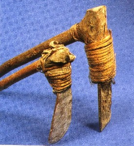
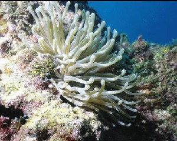
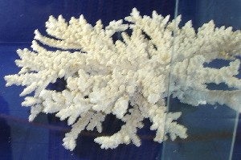

Ɔ - ɔ
ɔcyobe औच्योबे VAR: otyobe ओत्योबे. V क्रि. tie; बांधना.
ɔfɔt औफौत N सं. a big edible sea fish; एक बड़ी समुद्री खाद्य मछली. SD: fish, मछली.
ɔːkɑ औऽका N सं. prawn; fish; झींगा; मछली. SD: marine, समुद्री.
ɔkkocɑːy औक्कोचाऽय WH-Q प्रश्न. then what; फिर क्या. SD: time, समय.
 |
 ɔlo औलो VAR: ɔlɔ औलौ; olo ओलो. N सं. axe; कुल्हाड़ी. ʈʰ-ico-ɔlɔ ठीचोऔलौ. my axe. मेरी कुल्हाड़ी. SD: tool, औज़ार.
ɔlo औलो VAR: ɔlɔ औलौ; olo ओलो. N सं. axe; कुल्हाड़ी. ʈʰ-ico-ɔlɔ ठीचोऔलौ. my axe. मेरी कुल्हाड़ी. SD: tool, औज़ार.
ɔːm औऽम N सं. a kind of tree; एक प्रकार का पेड़. SD: flora, फूल-पत्ती.
ɔncɔʈɔ औन्चौटौ MORPH: ɔn-cɔʈɔ. N सं. crippled hand; टूटा हाथ. ŋɔncɔʈɔ ङौन्चौटौ. your crippled hand. तुम्हारा टूटा हाथ. SD: body part term, शारीरिक अंग शब्दावली.
ɔŋ औङ N सं. a variety of wild banana tree; एक प्रकार का जंगली केले का पेड़. SD: flora, फूल-पत्ती.
ɔŋkɑrɑ औङकारा MORPH: ɔŋ-kɑrɑ. N सं. finger; उंगली. meŋ-ɔŋ-kɑrɑ मेङौङकारा. our fingers. हमारी उंगलियां. SD: body part term, शारीरिक अंग शब्दावली.
ɔŋkorɔ औङकोरौ MORPH: ɔŋ-korɔ. N सं. hand; हाथ. meŋ-ɔŋ-korɔ मेङौङकोरौ. our hands. हमारा हाथ. SD: body part term, शारीरिक अंग शब्दावली.
ɔŋkɔcil औङकौचील MORPH: ɔŋ-kɔcil. V क्रि. hurry; जल्दी करना. ɑtɑ-ɔŋkɔcil-be आता औङकौचीलबे. Hurry up. जल्दी करो।.
ɔŋɔrlo औङौरलो Etym: Khora. N सं. cry; रोना. SD: psychological predicate, मनोवैज्ञानिक विधेय.
ɔo औओ N सं. sky; आकाश. SD: natural environment, प्राकृतिक वातावरण.
ɔpɔntɔklɔkɔ औपौनतौकलौकौ MORPH: ɔpɔn-tɔk-lɔkɔ. N सं. person who lives alone; अकेला. SD: relationship, सम्बंध.
 |
 ɔroɲɑtirtʰiri औरोञातीरथीरी MORPH: ɔro-ɲɑ-tir-tʰiri. N सं. sea anemone; एक प्रकार का समुद्री जीव. SD: marine, समुद्री.
ɔroɲɑtirtʰiri औरोञातीरथीरी MORPH: ɔro-ɲɑ-tir-tʰiri. N सं. sea anemone; एक प्रकार का समुद्री जीव. SD: marine, समुद्री.
ɔrotec औरोतेच MORPH: ɔro-tec. N सं. Pandanus leaf used to make mat or girdle-band; केवड़ा पत्ता (जिससे चटाई या करधनी बनाई जाती है). SD: flora, फूल-पत्ती.
 |
 ɔrotutco औरोतूत्चो MORPH: ɔro-tut-co. N सं. kevra fruit; केवड़े का फल. SD: edible fruit, खाद्य फल.
ɔrotutco औरोतूत्चो MORPH: ɔro-tut-co. N सं. kevra fruit; केवड़े का फल. SD: edible fruit, खाद्य फल.
 |
 ɔroʈɔlo औरोटौलो MORPH: ɔro-ʈɔlo. N सं. flower, of Pandanus; केवड़ा का फूल. SD: flora, फूल-पत्ती.
ɔroʈɔlo औरोटौलो MORPH: ɔro-ʈɔlo. N सं. flower, of Pandanus; केवड़ा का फूल. SD: flora, फूल-पत्ती.
ɔrɔ1 औरौ N सं. fruits with flowers; फूलों के साथ फल. SD: flora, फूल-पत्ती. SEE: ɔrɔ2 ‘leaf string’ ‘पत्तियों की डोरी औरौhm:{2}’.
ɔrɔ2 औरौ N सं. string of leaves. Women tie this around the waist; एक प्रकार की पत्तियों की डोरी जो करधनी की तरह बांधी जाती है।. SD: flora, फूल-पत्ती, costume & adornment, आभूषण एवं श्रृंगार. SEE: ɔrɔ1 ‘fruits with flowers’ ‘फल, फूलों के साथ औरौhm:{1}’.
ɔrɔːnɑrɑ औरौऽनारा N सं. Badder fish; एक तरह की मछली. SD: fish, मछली.
ɔrɔːŋɔ औरौऽङौ N सं. a variety of sea snake; एक प्रकार का समुद्री सांप. SD: reptile, रेंगने वाले जंतु.
 |
 ɔrɔɲɑrɑ औरौञारा VAR: ɔrɔŋɑrɑ औरौङारा; ɔrɔɲɑ औरौञा. N सं. typical staghorn coral; हिरन के सींग जैसा मूंगा. SD: marine, समुद्री.
ɔrɔɲɑrɑ औरौञारा VAR: ɔrɔŋɑrɑ औरौङारा; ɔrɔɲɑ औरौञा. N सं. typical staghorn coral; हिरन के सींग जैसा मूंगा. SD: marine, समुद्री.
 |
ɔrɔtlebimu औरौत्लेबीमू MORPH: ɔrɔtle-bimu. N सं. coloured striped butterfly; रंगीन धारीवाली तितली. SD: insect & invertebrate, कीट-पतंग एवं अरीढ़ जीव.
ɔrʈɔy औरटौय N सं. a kind of tree, wood of which is used to make bows; चुई पेड़ जिसकी लकड़ी धनुष बनाने के काम में आती है. SD: flora, फूल-पत्ती.
ɔtcɔr औत्चौर MORPH: ɔt-cɔr. N सं. scales of fish; मछली के छिलके. SD: body part term, शारीरिक अंग शब्दावली.
ɔtcɔːʈʈɔ औत्चौऽट्टौ MORPH: ɔt-cɔːʈʈɔ. N सं. hump; कूबड़. ŋ-ɔtcɔːʈʈɔ ङौतचौऽट्टौ. your hump. तुम्हारा कूबड़. SD: body part term, शारीरिक अंग शब्दावली.
ɔtkɔbotɑle औत्कौबोताले MORPH: ɔt-kɔbo-tɑle. V क्रि. skin of pig; खाल, सूअर की.
ɔtkɔwbɑːlɔ औत्कौवबाऽलो MORPH: ɔtkɔw-bɑːlɔ. N सं. shaved head; बाल मुड़ा सिर. ŋ-ɔtkɔwbɑːlɔ ङौत्कौवबाऽलो. your shaved head. तुम्हारा बाल मुड़ा सिर. SD: body part term, शारीरिक अंग शब्दावली.
ɔtɲyɔ औत्ञ्यौ MORPH: ɔt-ɲyɔ. VAR: ut-ɲyo ऊतञ्यो; ot-ɲyɔbe ओत्ञ्यौबे. N सं. house; घर. kʰudi-ɔt-ɲyɔ खूदी-औत-ञ्यौ. his house. उसका घर.  ʈʰ-ot-ɲyɔbe ठोतञ्यौबे. my house. मेरा घर. ɖe-ʈʰo-ɲiyo-be डेठोञीयोबे. This is my house. यह मेरा घर है।. du-ot-ɲiyo-be दूओत्ञीयोबे. That is my house. वह मेरा घर है।. SD: habitat, रहन-सहन.
ʈʰ-ot-ɲyɔbe ठोतञ्यौबे. my house. मेरा घर. ɖe-ʈʰo-ɲiyo-be डेठोञीयोबे. This is my house. यह मेरा घर है।. du-ot-ɲiyo-be दूओत्ञीयोबे. That is my house. वह मेरा घर है।. SD: habitat, रहन-सहन.
ɔːtʰo औऽथो N सं. morning; सुबह. SD: time, समय.
ɔttɔ औत्तौ ADV क्रि वि. early morning; सुबह-सुबह. nu-bɑt-il jo bi uru-ottɔko नूबातील जो बी ऊरू ओत्तौको. Noe sang the whole night till morning came. नू के सारी रात गाते-गाते सुबह हो गई।. SD: time, समय.
 ɔttɔŋ औत्तौङ VAR: ɔʈ-lɔŋo औटलौङो. N सं. back part of the neck; गर्दन का पिछला हिस्सा.
ɔttɔŋ औत्तौङ VAR: ɔʈ-lɔŋo औटलौङो. N सं. back part of the neck; गर्दन का पिछला हिस्सा.  ʈʰ-ɔʈlɔŋo ठौटलौङो. back of my neck. मेरी गर्दन का पिछला हिस्सा. SD: body part term, शारीरिक अंग शब्दावली.
ʈʰ-ɔʈlɔŋo ठौटलौङो. back of my neck. मेरी गर्दन का पिछला हिस्सा. SD: body part term, शारीरिक अंग शब्दावली.
ɔttɔwotʰuːwe औत्तौवोथूऽवे MORPH: ɔt-tɔwotʰuːwe. N सं. brother; भाई. SD: kin term, सम्बंधी वाचक शब्दावली.
ɔʈʰotoɑʈʰuekɑʈɑ औठोतोआठूएकाटा MORPH: ɔʈʰo-toɑ-ʈʰue-kɑʈɑ. N सं. sister, elder; बड़ी बहन. SD: kin term, सम्बंधी वाचक शब्दावली.
ɔʈɔy औटौय MORPH: ɔ-ʈɔy. N सं. bone, back shoulder; कंधे के पिछले हिस्से की हड्डी. SD: body part term, शारीरिक अंग शब्दावली.
ɔʈʈɔl औट्टौल N सं. white hair; सफ़ेद बाल. ŋ-ɔʈʈɔl ङौटटौल. your white hair. तुम्हारे सफ़ेद बाल. SD: body part term, शारीरिक अंग शब्दावली.
ɔʈʈɔle औट्टौले MORPH: ɔʈ-ʈɔle. V क्रि. clay designing on the back; पीठ पर मिट्टी से आकृति बनाना.